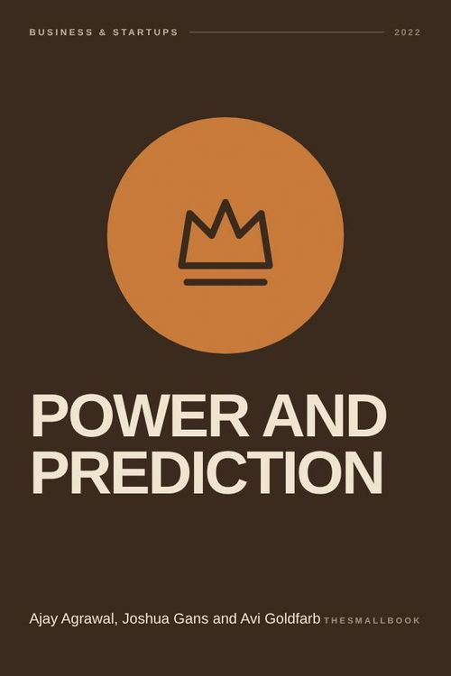

Library › Authors › Ajay Agrawal, Joshua Gans and Avi Goldfarb
Books by Ajay Agrawal, Joshua Gans and Avi Goldfarb
Ajay Agrawal, Joshua Gans and Avi Goldfarb has one book in the library. Every book here is read down to the big idea, the lessons, the lines worth keeping and the actions worth taking. Start with the summary, then buy the full book if it earns a place on your shelf.

Power and Prediction
2022 · 11 min · 8 lessons
Prediction is getting cheap, and the disruption follows from which parts of a decision were prediction all along.
Agrawal, Gans and Goldfarb split a decision into prediction and judgment. Machine learning collapses the cost of the first, which sounds simple and is not, because if you cannot tell where prediction ended and judgment began, you cannot see what is about to change. The disruption arrives between the old system and the new one, in the awkward period they call the between times.
Lessons in the summary
- One Decision, Two Parts
- Prediction Gets Cheap
- Judgment Is the Remainder
- The Between Times
- Systems Resist Change
- Data Is Not the Moat
- Who Owns the Judgment
- Designing the New System
Lines worth keeping
- Every decision is a prediction plus a judgment. AI changes the price of one of them.
- The biggest disruption is not the technology, it is the period when the old system no longer works and the new one is not built.
- If you cannot separate prediction from judgment, you cannot see what is being automated.
Questions Ajay Agrawal, Joshua Gans and Avi Goldfarb helps answer
Read nearby authors next
- Devdutt Pattanaik 5 books
- Rashmi Bansal 5 books
- Robin Sharma 5 books
- Chetan Bhagat 4 books
- Seth Godin 4 books
- Alex Hormozi 3 books
- Gurcharan Das 3 books
- Nir Eyal 3 books
Questions Ajay Agrawal, Joshua Gans and Avi Goldfarb helps answer
Where should I start with Ajay Agrawal, Joshua Gans and Avi Goldfarb? Start with Power and Prediction: Prediction is getting cheap, and the disruption follows from which parts of a decision were prediction all along.